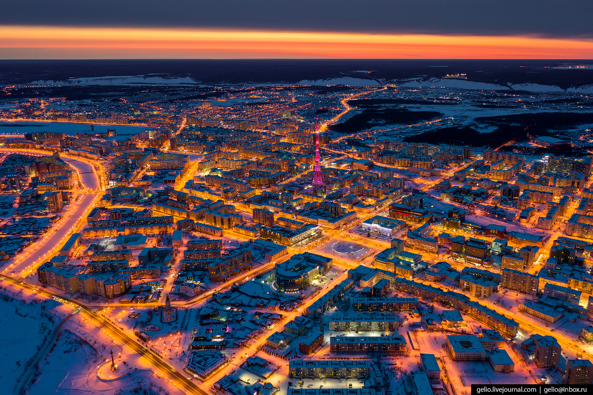

Содержание
Личная страничка Заитовой Кристины
Родилась 15 марта 2004 года в Перми. В 2020 году закончила школу. В том же году поступила в "АШИТ"
Хобби
- k-pop
- Stray kids
- Программировние
- кушать ток-покки
3 любимых сериала
- Токкэби
- Потомки солнца
- Сказание кумихо
Самое далекое место, где я побывала.
Якутск - город в Российской Федерации, столица Республики Саха (Якутия). Образует городской округ город Якутск.

Третий город Дальневосточного федерального округа по численностинаселения(после Владивостока и Хабаровска). Самый крупный город, расположенныйвзоневечной мерзлоты.